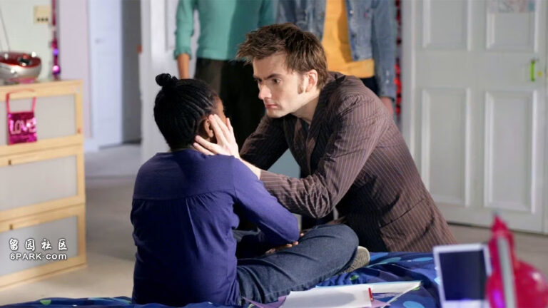
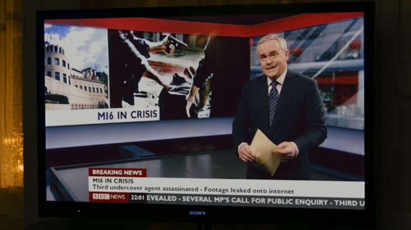

上周，英国知名电视新闻主播休·爱德华兹（Huw Edwards）在伦敦法庭承认自己犯下三项罪名，包括曾于2020年至2022年间，持有共41件涉及未成年人的不雅照片和视频。
休·爱德华兹担任BBC十点新闻节目主播长达二十年之久
据悉，这些内容是由名为亚历克斯·威廉姆斯（Alex Williams）的恋童癖罪犯通过手机通讯软件WhatsApp直接发送给他的。去年，该名恋童癖者被捕入狱，调查过程中供出的下家中就包括休·爱德华兹。上月，休·爱德华兹被正式起诉。7月31日他主动认罪后，目前正在等待法庭给出的最终判决意见和刑罚裁决。
今年62岁的休·爱德华兹是威尔士人，曾担任英国广播公司（BBC）十点新闻节目主播长达二十年之久，伴随着几代英国人的成长，可说是英国人最熟悉的电视新闻主持。不过，随着他的丑闻彻底曝光，上周，BBC已经从其流媒体平台iPlayer上删除了2006年有他参与演出的热门英剧《神秘博士》中的一集。在由大卫·田纳特饰演神秘博士的该集故事中，休·爱德华兹以声音客串出场，播报电视新闻。虽然不过是短短两场戏、几句台词，却因其在英国家喻户晓的熟悉嗓音，必须进行重新配音后，才能让该集内容重新上架。

以爱德华兹播报新闻为背景声音的一集《神秘博士》已下架，待重新配音后再上架
与此同时，爱德华兹老家威尔士小镇的一幅壁画已被涂刷抹去。卡迪夫议会也迅速采取行动，拆除了卡迪夫城堡上爱德华兹相关文字的铭牌，取消了由他负责解说的语音导览服务。另外，爱德华兹过往还多次在BBC制作的《大不列颠菜单》（The Great British Menu）厨王争霸赛中出镜，如今这些内容也已从流媒体平台iPlayer上消失。
休·爱德华兹的声名狼藉始于去年7月。当时，《太阳报》披露他曾向一名青少年支付费用，引诱后者向其提供露骨的性爱照片。不过，英国警方随后并未就此指控对爱德华兹采取任何行动，理由是双方交易你情我愿，无证据表明爱德华兹触犯刑法。但他的东家BBC慑于外界的压力，还是宣布爱德华兹暂时停工。按照他的妻子维姬·弗林德的说法，去年整个夏天，丈夫都因严重精神健康问题在住院休养。直至今年4月，他终于因所谓的健康原因，从BBC正式辞职。
不过，上周中忽然爆出他出庭的新闻，着实让外界大吃了一惊。直到此时，之前一直守口如瓶的英国警方才告诉外界，爱德华兹其实早在去年11月就已被捕，之后一直保释在外，直到上周正式出庭。另一方面，据悉BBC当时就已知悉此事，却没有立刻将其解雇，一直等到今年4月才让他自己辞职。如今东窗事发，BBC的这种做法受到外界的猛烈批评。
对此，BBC的总裁蒂姆·戴维（Tim Davie）解释说，他们当时只知道爱德华兹的被捕是因为涉及未成年人的不雅内容，但警方当时并未公布涉罪具体细节及未成年人的具体年龄，所以BBC才没有在第一时间就将其解雇。就这样，双方的雇佣关系在这位知名主播被捕后，又维持了长达5个月。在此期间，BBC还照例向其支付了总共20万英镑的薪水（约合182万元人民币）。上周五，英国文化大臣莉萨·南迪（Lisa Nandy）公开呼吁已彻底声名狼藉的休·爱德华兹应迅速将这笔不义之财退还给前东家，以免英国纳税人的付出被肆意滥用。

《007：大破天幕杀机》中，爱德华兹播报了英国军情六处遭袭击的新闻
除了上述的《神秘博士》《大不列颠菜单》之外，2012年上映的邦德系列电影《007：大破天幕杀机》中，爱德华兹其实也曾客串登场，同样是扮演自己，在电视中播报了英国军情六处遭袭击的新闻。截至目前，流媒体平台上的这部影片仍可正常点播观看，不过英国民间要求将其出场画面删除的呼声，过去几天里已甚嚣尘上。
相对而言，影视作品中的休·爱德华兹出现的画面再怎么说都只是点缀，相对容易删去。而BBC节目库中，大量由其担任主持的过往新闻节目该如何处理，才是真正棘手的问题。多年以来，爱德华兹一直都是BBC新闻节目最仰赖的王牌主持，包括威廉和哈里两位王子的结婚典礼、菲利普亲王和英国女王伊丽莎白二世的葬礼、2012年伦敦奥运会开幕以及查尔斯的加冕仪式等最重磅的新闻，全都由他担任主播。这些档案画面，究竟是要一刀切全部下架，还是想办法用技术处理，将会成为BBC手里的烫手山芋。